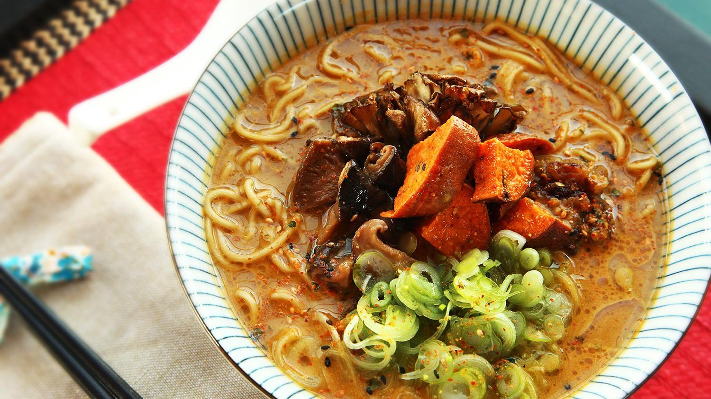

Ultimate Vegan Ramen

Description
A mix of charred and fresh vegetables along with dried and fresh mushrooms lends the basic broth rich, layered flavors. A soy-based tare made by simmering shiitake mushrooms
and aromatics in soy sauce and mirin serves double-duty as a broth flavoring and a topping. Roasted sweet potatoes make a good topping while also thickening up the broth
and giving it a rich, creamy texture when combined with pureed roasted garlic. A mushroom-scallion oil adds fat and flavor to the finished dish, creating the sought-after
shiny fat bubbles on the surface of a good bowl of ramen.
Ingredients
- Eggplant
- Onion
- Garlic
- Ginger
- Vegetable or canola oil
- Fresh shiitake mushrooms
- Maitake or beech mushrooms
- Kombu
- Dried porcini mushrooms
- Dried shiitake mushrooms
- Napa cabbage
- Leek
- Scallions
Steps
- Toss eggplant, onion, garlic, and ginger with oil until coated on all surfaces.
- Transfer to a foil-lined broiler pan or rimmed baking sheet. Broil, turning vegetables occasionally until all vegetables are well charred
on all surfaces and eggplant is completely tender (a knife inserted into it should meet no resistance around the stem or base).
- Remove from oven, lower rack to center position, and adjust oven temperature to 400°F (204°C). Wrap eggplant in aluminum foil and
reserve for Charred Eggplant Topping.
- Meanwhile, make the Roasted Sweet Potato and Mushroom Topping